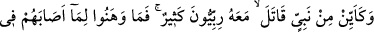
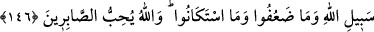

“Sana, benim misafirlerime saldırmayacaksın demedim mi?” Hayvan, hemen uzaklaştı,
ben temizlenme imkânı buldum. Döndüğümde, Ebu’l-Hayr bana: “Zâhiri şeyleri
düzeltmeye uğraşıyorsunuz ama aslandan korkuyorsunuz. Biz ise kalbimizi düzeltmeye
uğraştığımızdan, aslan bizden korkuyor.” dedi.
Bilesin ki evliyâullah Allah’ın sevgilileridir.
Bu dünyada hiç kimse Allah’ın sevgilisini incitmesin.
146. Nice peygamberler vardır ki, beraberinde birçok Allah erleri bulunduğu
halde savaştılar da bunlar, Allah yolunda başlarına gelenlerden dolayı gevşeklik ve
zaaf göstermediler, boyun eğmediler. Allah, sabredenleri sever.
“Nice peygamber var ki kendileriyle beraber birçok erenler çarpıştılar.”
“Erenler” diye ifadelendirdiğimiz “ribbî” kelimesi “rabbânî” kelimesi gibi, Rabbe
mensûp kişi demektir. “râ” harfinin esreli oluşu, nisbet yâ’sından kaynaklanan
değişikliklerdendir. Çünkü Araplar, bir şeyi bir şeye nisbet ettikleri zaman kelimeyi
değiştirirler. Meselâ: Basra’ya mensûp kişiye “Bısrî” derler.
“Ribbî” kelimesi cemâat mânasındaki “rabbe” kelimesine de mensûp olabilir. O
zaman âyetin mânası şöyledir: Nice peygamber vardır ki i’lâ-yı kelimetullah ve dîni
yüceltme gayesiyle müttakî âlimler, ya da birçok topluluklar kendileriyle birlikte
savaşmışlardır.
“Allah’ın yolunda başlarına gelenden yılmadılar.” Bu cümle, “savaştılar”
cümlesine mâtûftur. Savaş esnasında başlarına gelenden fütûr göstermezler; himmetleri
eksilmez, mânasındadır. “Başlarına gelenden” ifadesi, olumsuzluk mânasının illeti
değil, olumsuzun illetidir. Yani “başlarına gelenden dolayı korkuya kapılmazlar”
demektir.
Düşman karşısında veya cihad ve dînî herhangi bir konu karşısında “zayıflık
göstermediler”, düşmana “boyun eğmediler. ”
Bu ifade, müşrikler ashâb-ı kirâma çullanıp Hz. Peygamber’i neredeyse öldürecek
duruma gelince ashâb-ı kirâma ârız olan yılgınlık ve moralsizlikle o esnâda müşriklere
karşı koymaktan zaaf göstermelerine, bir de Ebû Süfyan’dan emân talep etmek için,
münâfık Abdullah b. Übeyy’in desteğini almak istediklerinde, kâfirlere boyun eğmiş
olmalarına târizde bulunmaktadır.
“Allah” kendi yolunda şiddetli sıkıntılara ve nefse hoş gelmeyen şeylere göğüs gerip
katlanarak “sabredenleri sever.” Zaferi onlara nasip eder ve derecelerini yükseltir.